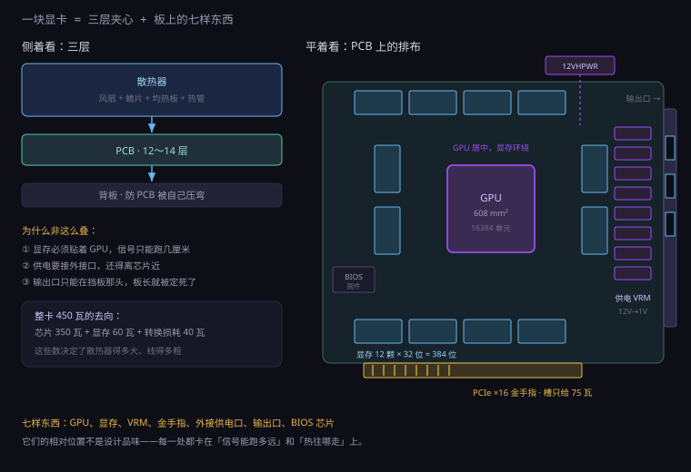
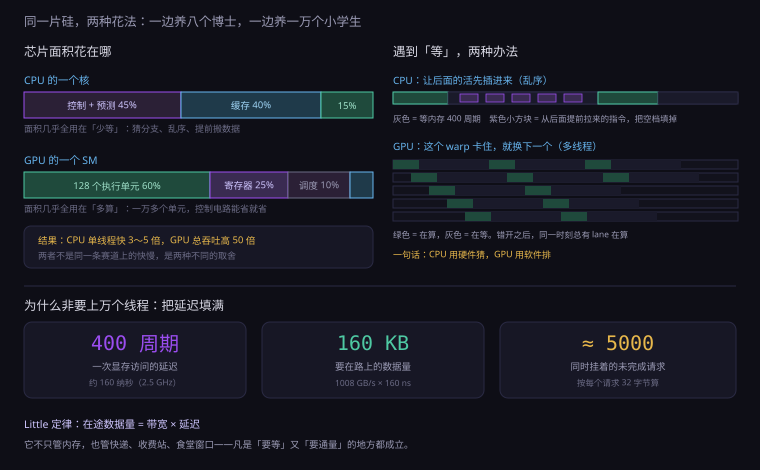
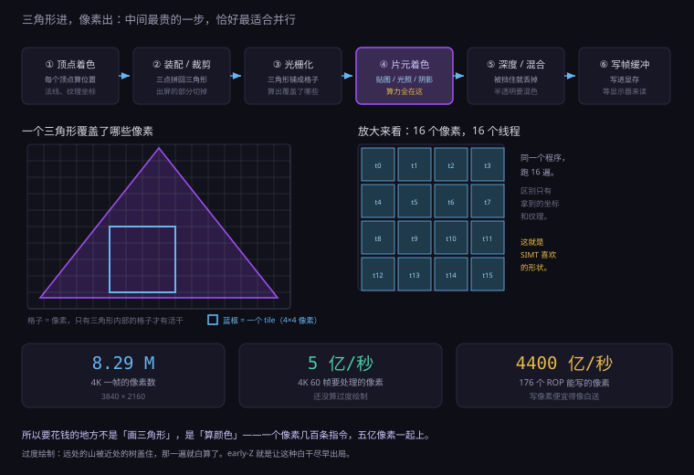
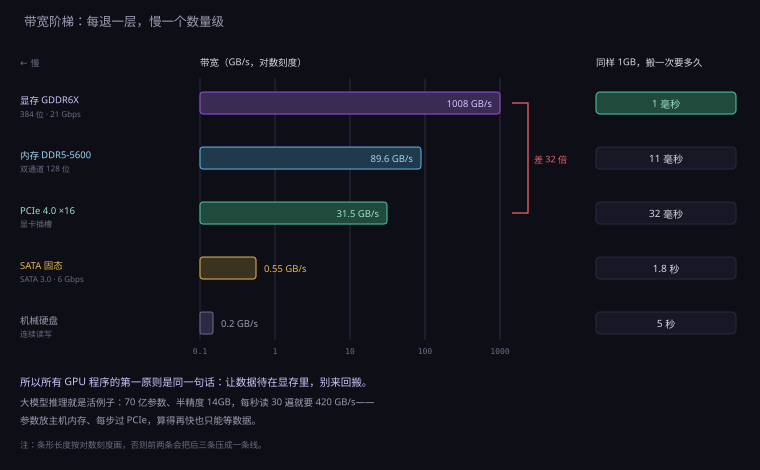
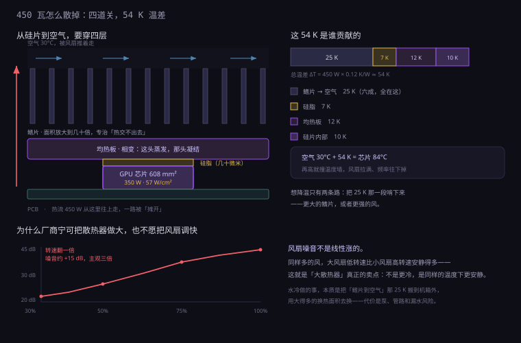

约 1.1 万字 · 5 张图 · 读完你能说清一块显卡上每样东西为什么非有不可、 为什么 GPU 是一万多个笨核、为什么显存带宽是内存的十倍
把一块显卡平放在桌上，从上往下数，它是三层夹心： 散热器、电路板、背板。真正干活的只有中间那一层薄薄的 PCB， 上下两层都是为了让它别烧掉。
掀掉散热器，板上能认出七样东西，每一样后面都对应一条技术线：
最后这一项最容易被忽略，但它最能说明问题：显卡有自己的固件。 开机时它先自己跑一段程序，把显存训练好、把风扇转起来、把输出口点亮， 然后才对主机说「我准备好了」。这个顺序和 CPU 几乎一样。

一台电脑要有四样东西才能算电脑：处理器、内存、存储、输入输出。 显卡上这四样齐全，而且都是独立的：
| 一台电脑需要 | 主机里是 | 显卡上是 |
|---|---|---|
| 处理器 | CPU，8 到 16 个核 | GPU，上百个 SM、上万个执行单元 |
| 内存 | DDR5 内存条，双通道 | GDDR6X 显存，384 位宽 |
| 存储 | 固态硬盘 | 没有——它不存东西，断电就光 |
| 操作系统 | Windows、Linux | 固件 + 驱动，一个极简的调度器 |
| 输入输出 | USB、网口、PCIe | PCIe 对主机，HDMI/DP 对显示器 |
唯一的空缺是「存储」——所以严格说，它更像一台没有硬盘的嵌入式机器： 只负责算，算完就把结果交出去。
这个结构解释了很多日常怪现象。比如为什么显卡驱动一崩，屏幕会黑一下再回来： 主机的系统没死，是显卡上那个「小系统」重启了。 比如为什么显存不够时程序会直接崩，而不是像内存不够那样慢一点： 因为显存对 GPU 来说就是物理内存，没有「换页到硬盘」这条路可走。
位置不是随便定的。显存颗粒必须紧贴 GPU 芯片，因为那 12 条通道跑的是 每秒两百亿次的信号——在 PCB 上，这种信号走超过几厘米就开始衰减、开始互相串扰。 距离在这里不是「方便不方便」，是「能不能通」。
供电模块必须靠边，因为它要接外接供电口，而且它自己也发热， 挤在芯片旁边等于给芯片加一个热源。输出口必须在挡板那一头， 因为挡板是唯一通向机箱外面的地方——于是 PCB 的长度，本质上由 「挡板到芯片、芯片到供电口」这两段距离决定。
PCB 本身也不简单：一块旗舰卡是十二到十四层板。信号层和地层交替叠， 每一层的走线方向横竖交错，靠过孔上下连通。 为什么层数这么多？因为几百根显存线要等长、要间隔、 还要夹在两层地之间做屏蔽——一层板放不下，就只能往上叠。
一块入门卡可以做到 17 厘米长、双槽厚、不用外接供电。 而旗舰卡是 35 厘米长、3.5 槽厚、要插一根 600 瓦的线。 差距不是设计品味，是三笔账算下来只有一个解。
显存颗粒是 32 位一颗的。要做 384 位宽，就得 384 ÷ 32 = 12 颗。
要做 24GB，每颗得 2GB。十二颗 2GB 的颗粒，围着 GPU 芯片排一圈，
每颗到芯片的走线都要等长——这叫等长绕线，是 PCB 上最占地方的东西。
这就是为什么显卡的 PCB 总是「芯片居中、颗粒环绕、四角空着」： 空着的地方不是浪费，是绕线用的余量。 想把卡做短？可以，把颗粒叠到背面去——代价是背面不能贴散热，温度立刻上去。
PCIe 插槽的供电上限是 75 瓦（3.3 伏和 12 伏加起来）。 这个数字从 2004 年到现在没变过。而一块旗舰 GPU 芯片自己能吃掉 350 瓦以上， 加上显存、供电损耗，整卡 450 瓦。
75 瓦和 450 瓦之间的缺口，只能靠外接供电线补。 于是就有了那根粗线——它不是「辅助」，它承担了整卡八成以上的电。 这也是为什么电源不够时，第一反应不是「换个更大的电源」，而是「先看显卡那根线插紧没有」。
这一笔最狠。GPU 芯片面积大约 6 平方厘米（608 平方毫米），核心功耗 350 瓦左右：
350 W ÷ 6.08 cm² ≈ 57 W/cm²
对比一下：一千瓦的电水壶，壶底面积大约 150 平方厘米，热流密度 1000 ÷ 150 ≈ 6.7 W/cm²。
GPU 芯片单位面积上的发热，是电水壶底的八倍多。
而它还不能像水壶那样把热直接倒进水里——它得靠一块金属贴上去，一点点导走。
要在这点面积上散掉 350 瓦，散热器的鳍片总面积得做到零点几平方米， 也就是把面积放大一百倍。放大一百倍的办法只有一个：长出很多很多片薄片，然后吹风。 这就是那块「砖」的体积从哪来的。
所以「砖」不是设计风格，是三笔账的唯一交点。 你要是把功耗砍到 150 瓦，它立刻就能变回一张薄薄的卡——这就是同一代芯片做出来的 「笔记本版」和「桌面版」体积差三倍的原因，后面第 11 小节会讲。
有人会想：做功耗低一点的芯片不行吗？可以，但要付出代价，而且代价不成比例。
芯片的功耗大致是 P ∝ 频率 × 电压²。而要让频率再高一点，
电压得跟着抬——因为电路要在更短的时间里把电容充满。
经验上频率加 10%，电压要加 5% 到 8%，功耗就变成
1.1 × 1.07² ≈ 1.26，也就是多花 26% 的电，只换来 10% 的性能。
反过来也一样：把功耗从 450 瓦限到 150 瓦，频率和电压都得降， 性能通常要掉一半以上。这不是设计偷懒，是这条曲线本身就这么陡。 明白了这一点，你就能理解后面第 11 小节里「同一颗芯片，笔记本版性能腰斩」为什么是常态。
打开 GPU 的架构图，第一眼的困惑是：找不到「核」。 CPU 的图上一眼就能看出八个方块，每个方块里塞着解码器、乱序执行、分支预测、两级缓存。 GPU 的图上是一大片重复的小格子，密密麻麻，像瓷砖。
以一代旗舰为例：128 个 SM（Streaming Multiprocessor），每个 SM 里 128 个 FP32 执行单元，
加起来 128 × 128 = 16384 个。
宣传语里说的「一万六千个核心」，指的就是这些执行单元——它们每个只能做加减乘，
连除法都要拆成好几步。
SM 是 GPU 的「基本班组」，一个 SM 大致这么分工：
注意最后两项的比例：寄存器和缓存占的面积，比运算单元还大。 这是个重要信号——GPU 的钱不是花在「算」上，是花在「让算的单元别闲着」上。
GPU 调度线程的最小单位不是「一个」，是 warp：NVIDIA 是 32 个线程， AMD 叫 wavefront，64 个。同一个 warp 里的 32 个线程，在同一时刻执行同一条指令， 只是各自的数据不同。
这叫 SIMT（Single Instruction, Multiple Threads）。好处是：一条指令译码一次， 喂给 32 个执行单元，控制电路省了 32 倍。 代价是：这 32 个线程必须走同一条路。
如果代码里出现 if (x > 0) … else …，而 32 个线程里一半满足、一半不满足，
硬件不会分成两拨同时跑，而是先跑满足的那一半（另一半干等着），
再跑不满足的那一半（前面那半干等着）。
这叫分支分歧（divergence），效率直接打对折。
这就是为什么给 GPU 写程序有一条铁律：让相邻的线程处理形状相同的数据。 矩阵里的每个元素、图像里的每个像素、粒子里的每个粒子——它们做的事一模一样， 所以 GPU 爱它们。而「解析一段文本」「遍历一棵树」这种每步都不同的活，GPU 干得很痛苦。
写 GPU 程序时，你要启动的不是「一万个线程」，而是一个三层结构：
为什么要有 block 这一层？因为「同步」只能在组内做。 两个线程要交换中间结果，必须先写进共享内存、再喊一声「都停下，等大家写完」—— 这个「喊一声」只能在一个 block 内部生效。 跨 block 就没有这种便宜事了，只能拆成两次 kernel 启动。 所以你写 GPU 程序的大部分时间，花在「怎么把问题切成能独立算的块」上。
一个 SM 能同时挂多少线程，是有硬上限的，而且被好几样资源卡着。 最常卡住它的是寄存器。
假设一个 SM 有 65536 个寄存器。如果每个线程要用 64 个，那最多只能挂
65536 ÷ 64 = 1024 个线程，也就是 32 个 warp。
寄存器用得更狠，能挂的线程就更少；线程少了，能用来「填空」的 warp 就少，
内存一慢就没人顶上来，性能就掉。
这就是 GPU 优化里那条反直觉的经验：有时候让每个线程少干一点、少存一点， 反而整体更快。因为省下来的寄存器换成了更多同时在跑的线程， 而掩延迟能力比单线程效率更值钱。
为什么不能给 CPU 也塞一万个核？因为两者的目标根本不同。
CPU 面对的是一条充满分支的串行指令流。下一步走哪，取决于上一步的结果。 于是它把硅片预算全砸在「猜」和「提前做」上：分支预测器猜下一步跳哪， 乱序执行把后面的指令提前拉过来跑，几级缓存把可能要用的数据先搬过来。 这一整套，都是为了把「等」的时间压到最短。
GPU 不猜。它没有分支预测，没有乱序执行，缓存也小。 它面对的是几万个一模一样的任务，所以它用另一种办法对付「等」： 不等。这个 warp 卡住了，就换下一个 warp 上来跑。
显存的一次访问，延迟大约 400 到 600 个时钟周期。旗舰卡显存带宽 1008 GB/s， 时钟 2.5 GHz。要在这么高的带宽下不停顿，需要多少数据「在路上」？
1008 GB/s × 400 ÷ 2.5 GHz ≈ 1008 GB/s × 160 ns ≈ 160 KB
也就是说，任何时刻都得有 160KB 的读请求在飞行途中，带宽才能跑满。 平均每个请求 32 字节的话，就是五千个请求同时挂着。 五千个请求，至少得有五千个线程在那儿「等」——这就是为什么 GPU 一个 SM 要能同时挂 上千个线程，而 CPU 一个核只挂两三个。
把一段纯串行的代码丢给 GPU，它的表现会差到让你怀疑硬件坏了： 一个 SM 只有一个线程在跑，等于用一整个车间的资源做一件手工活， 时钟还比 CPU 低（2.5 GHz 对 5 GHz 以上），指令级优化一件没有。
反过来，CPU 跑大规模并行也吃亏：它只有十几个核， 每个核的乱序窗口再大，也填不满几百万个互相独立的任务。 没有谁更强，只有谁更合适。
因为摊不起。乱序执行不是加一条指令就有的，它需要重排序缓冲、寄存器重命名、 分支预测器、指令窗口——这套控制逻辑的面积，往往是执行单元的好几倍。
CPU 只有八个核，每个核摊一份控制电路，摊得起，换来单线程快。 GPU 有一万多个执行单元，如果每个都要一套乱序逻辑，硅片上一半面积会被控制电路吃掉， 能算的就少了。它选的是另一条路：把「独立」这件事交给软件去安排， 硬件只按顺序发指令，靠切换 warp 填空。
换句话说，CPU 在硬件里猜和重排，GPU 在软件里摆好。 前者的代价是面积，后者的代价是程序员的脑子。

说了这么多并行，得说清 GPU 到底在并行什么。答案藏在一件事里： 屏幕上的像素之间，几乎互不相干。 第 100 行第 200 列的像素是什么颜色，不需要知道它右边那个像素是什么颜色。
一个三维场景进来，走的是这样一条流水线：
关键在于：第 4、5 步里，每个像素的处理完全独立。 一个 4K 画面是 829 万个像素，60 帧就是每秒五亿个像素。 这些像素可以切成任意多份，分给任意多个执行单元，谁也不等谁。
旗舰卡有 176 个 ROP（负责最后写像素的单元），2.5 GHz：
176 × 2.5G = 440 Gpixel/s，每秒四千四百亿像素。
而 4K 60 帧只需要五亿——写像素这件事,便宜得像白送。
贵的是第 5 步。一个像素可能要采样四张纹理、算一次物理光照、跑一次阴影贴图查询， 几百条指令。五亿像素乘几百条指令，就是每秒上千亿次运算。 这就是为什么显卡的算力都堆在片元着色上，而 ROP 只有一百多个。
第一件：三角形太多会不会卡？一帧三百万个三角形、60 帧， 就是每秒一亿八千万个图元。听起来吓人，但旗舰卡的光栅化能力是每秒几十亿图元， 顶点着色也不过一亿八千万次——和五亿像素、每个跑几百条指令相比，是小头。 所以「多边形数量」早就不是瓶颈了，瓶颈在像素和显存。
第二件：为什么开了抗锯齿就掉帧？抗锯齿（MSAA）是在每个像素里 存好几份颜色和深度，比如 4 倍就是四份。它不增加着色次数， 但把写回的数据量翻了四倍：4K 画面的深度缓冲本来一份 33MB，四倍就 130MB， 每帧都要过一遍。掉的是带宽，不是算力。 这也解释了为什么后来的抗锯齿方案（TAA 之类）改用「时间上抖动 + 复用上一帧」—— 目的就是不再多写。
第三件：显存里为什么总有一大块是「看不见」的。 屏幕在显示的这张图，和 GPU 正在画的那张图，不能是同一块内存—— 否则你会在屏幕上看到画了一半的画面（这叫撕裂）。 所以至少要有两份帧缓冲：一份给显示器读，一份给 GPU 写，画完交换。
4K 一份 32 位色是 33MB，两份 66MB，加上深度缓冲、后处理用的中间图、 阴影贴图、各种 G-Buffer，一个 3A 游戏占掉 8 到 12GB 显存毫不奇怪。 你买的 24GB，一大半交给了「同时存在的好几张画面」。

2001 年以前，这条流水线是焊死的：光照公式写进电路，游戏想换个效果就得等下一代硬件。 2001 年之后，中间几步变成了可编程的——你写一段小程序，硬件替你跑几百万遍。 这段程序就叫着色器（shader）。
一旦「每个像素跑一段程序」变成通用能力，人们立刻发现： 这不就是「对数组里每个元素做同样的操作」吗？ 于是有人拿它算矩阵、算物理、算哈希。显卡从此走上了一条设计者没预料到的路—— 第 10 小节讲这条岔路。
很多人以为显存就是「显卡上的内存条」。它确实也是 DRAM，电容加晶体管， 也要刷新，断电也忘——但在工程上，它和内存条几乎是两种东西。
| 维度 | DDR5 内存条 | GDDR6X 显存 |
|---|---|---|
| 连接方式 | 一根总线挂多个插槽、多个 rank | 点对点，一颗颗粒独占一段线 |
| 单颗位宽 | 整条 64 位，颗粒是 8/16 位 | 一颗就是 32 位 |
| 信号 | 两电平，1 个周期传 1 位 | PAM4 四电平，1 个周期传 2 位 |
| 频率 | 5600 MT/s 上下 | 19～24 Gbps（等效） |
| 纠错 | 消费级无 ECC，服务器有 | 消费级普遍无 ECC |
| 可换 | 插槽，随时换 | 焊死，坏一颗要整卡修 |
最关键的是前两行。内存条是「总线」结构：一根线挂好几个设备， 要轮流说话，所以频率上不去、延迟要迁就最慢的那个。 显存是「点对点」结构：主板上一颗颗粒连一条专用的线到 GPU， 谁也不跟谁抢，所以能把频率拉到 20 Gbps 以上。
位宽这个说法容易误会。384 位不是一根特别宽的线，而是
384 ÷ 32 = 12 条互相独立的 32 位通道，
每条通道连一颗颗粒。所以数一数卡上有几颗显存，乘 32，就是位宽；
反过来说，位宽决定了你必须焊几颗颗粒。
数据线是点对点的，但命令线是共享的：所有颗粒都听着同一条命令总线， 由 GPU 的显存控制器点名「第 7 颗，第 1234 行，开」。所以显存内部依然有 bank、 依然有行缓冲——上一节讲的 DRAM 结构，在这里一模一样，只是每颗颗粒只管自己那 32 位。
PAM4 是另一件要付代价的事。两电平（NRZ）只用高低两个电压，判定简单； 四电平有四个电压档，一个周期能传两位，但相邻档之间的差距只有三分之一， 眼睛张开的高度也只有三分之一。信号稍微劣化就会判错。
所以 20 Gbps 的显存只能点对点、只能跑几厘米、只能用在低损耗的板材上。 它把「快」换成了「不能有任何多余的东西」——包括不能插拔、不能多挂、 不能在中间加个插座。
三个数相乘再除八：位宽 × 每针速率 ÷ 8。 旗舰卡是 384 位、21 Gbps：
384 bit × 21 Gbps ÷ 8 = 1008 GB/s
而一条 DDR5-5600 双通道是 2 × 64 bit × 5600 MT/s ÷ 8 ≈ 89.6 GB/s。
差了十一倍。
PCIe 4.0 ×16 呢？16 × 16 Gbps ÷ 8 × 0.985 ≈ 31.5 GB/s，差三十二倍。
所以显卡的存储层级是这样的：显存是「内存」，PCIe 是「网线」，主机内存是「对面的服务器」。 GPU 尽量不碰 PCIe，一旦碰上，速度就掉一个数量级。
GDDR 的绝对延迟比 DDR 更高——一颗颗粒离 GPU 只有几厘米，但信号要跑过 PCB、 穿过封装、进出显存控制器，一趟四五百个周期。而 DDR5 大约七八十纳秒。
听起来很糟，但第 4 小节算过了：GPU 有上万个线程在那儿等着，延迟被并行彻底掩盖。 它买的是「宽」，不是「快」。 这也解释了为什么 GPU 上那块 L2 缓存大得离谱——旗舰卡 72MB， 比很多 CPU 的 L3 还大。它不是为省延迟，是为了减少对显存的重复访问，省带宽。
数字抽象，换成时间就有感觉了。假设要处理 1GB 数据：
1 GB ÷ 1008 GB/s ≈ 1 毫秒。1 GB ÷ 32 GB/s ≈ 31 毫秒。1 GB ÷ 3 GB/s ≈ 333 毫秒。每退一层，慢一个数量级。这就是所有 GPU 程序的第一原则：让数据待在显存里，别来回搬。
游戏里显存爆了，画面会突然从 60 帧掉到 5 帧，然后开始卡顿、贴图变糊。 原因是：该放的贴图放不下了，驱动只好把一部分挪到主机内存， 每次要用再通过 PCIe 搬回来——按上面的账，一次搬运就是几十毫秒。
Windows 任务管理器里那个「共享 GPU 内存」，就是这个后备区。 它显示的数字很大（通常是内存的一半），但它不是显存，它是「慢三十倍的显存」。 看到游戏显存占用贴着上限、共享内存开始涨，就该降画质了。
还有个老坑叫 256MB 窗口：早期 PCIe 只允许 CPU 一次映射显卡的 256MB 显存， 其余部分要开窗口切换。2018 年之后的 ReBAR（AMD 叫 SAM）把这个窗口开成全部， 游戏里能换来百分之几的帧数。幅度不大，但它说明「搬」这件事有多贵。
这笔账在 AI 上最直观。一个 70 亿参数的模型，半精度（每参数 2 字节）就是 14GB。 推理时每一步都要把所有参数读一遍，一秒几十步：
14 GB × 30 步/秒 = 420 GB/s
也就是说，光是把参数读一遍，每秒就要 420GB 的带宽。 如果参数放在主机内存、每步都过 PCIe，理论最高 32GB/s—— 算得再快也没用，全在等数据。 所以显卡的显存容量和带宽，直接就是「能跑多大的模型」和「跑得多快」。
还有一笔常被忽略的账：上下文越长，缓存越占地方。 70 亿模型、32 层、每层存键和值，每个 token 大约 0.5MB； 四万 token 的上下文，就是 20GB 的额外显存—— 比模型本身还大。这就是为什么「长上下文」是个显存问题，不只是算法问题。

电从两个地方来：主板的插槽给 75 瓦，电源的线给剩下的。 听起来简单，但中间还有一段没人注意的转换——显卡芯片只要 1 伏左右的电压。
12 伏直接喂进芯片会当场烧掉。所以每块显卡上都有一组供电模块（VRM）：
把 12 伏切成几十万赫兹的方波，用电感和电容滤成 1 伏上下的直流。
这套电路要提供几百安的电流——旗舰卡核心功耗 350 瓦、电压约 1 伏，
算下来 350 A。
三百多安是什么概念：家用电磁炉整机也就十安左右。 为了扛住这个电流，VRM 要做成「多相」——十几相并联，每相轮流干活， 这样每相的电流小一点、发热散得开一点。你在显卡上看到那一排黑色方块， 一相一个，数一数就知道这块卡的供电规格。
| 接口 | 针脚 | 供电上限 | 出现在 |
|---|---|---|---|
| PCIe 插槽 | x16 金手指 | 75 W | 所有卡 |
| 6 针 | 3 路 12V | 75 W | 老卡、入门卡 |
| 8 针 | 3～4 路 12V | 150 W | 主流卡 |
| 12VHPWR | 12 路 12V + 4 信号 | 600 W | 新旗舰 |
12 伏变 1 伏不是无损的。好的 VRM 效率大约 90%，差一点 85%。
按 90% 算：要给芯片送去 400 瓦，就得从 12 伏那头取走
400 ÷ 0.9 ≈ 444 瓦，差额 44 瓦直接变成热，堆在电感上。
所以摸显卡背面的供电区会烫手——那不是芯片的热，是转换损耗的热。 整条链路连起来算一遍：墙上的插座 → 电源（金牌约 90%）→ 12 伏 → VRM（约 90%）→ 芯片。两头一乘只有八成出头，一块 450 瓦的卡， 墙上实际要吃五百多瓦。 这就是为什么整机功耗总比「CPU + 显卡」加起来高，也是为什么电源效率值得多花那点钱。
12VHPWR 有 12 根供电针，600 瓦对应 50 安，平均每根四安多——单看不算夸张。 但插头没插到底时，接触面积变小，接触电阻变大； 同样的电流压在更小的接触面上，局部温度就会飙上去， 塑料先软、针脚再氧化、电阻更大，正反馈，最后烧穿。
所以那批烧接口的新闻，本质不是「功率太高」，是一个必须在毫米级公差内插紧的机械结构， 被交给了普通用户。后来的改版加了更长的接触片和状态检测针，就是在治这个。
450 瓦是平均功耗。实际跑游戏时，功耗会在毫秒级上下乱跳—— 一帧开始时几千个线程同时启动，电流瞬间抽走，实测尖峰能到六七百瓦。 电源如果按「平均 450 瓦」配，就会在这几十微秒里电压塌下去，机器直接重启。
这就是 ATX 3.0 规范要单独规定「短时峰值能力」的原因： 电源得能在百微秒量级扛住接近额定两倍的功率。 买电源时那句「留 30% 余量」，说的就是这个尖峰，不是平均功耗。
第 2 小节算过热流密度：57 W/cm²。这个热量要穿过四层东西才能到空气里， 每穿过一层，温度就掉一点——掉多少，取决于那一层的热阻。
一条粗略的经验：每 1 瓦功耗，大约需要 0.1 到 1 平方厘米的散热面积， 具体看风量和允许的温升。450 瓦的卡，鳍片面积做到零点几平方米——相当于把一张 A4 纸 裁成几百条，叠起来。
热和电在这件事上可以类比：温差相当于电压，功率相当于电流，热阻相当于电阻。
于是有了和欧姆定律一样的形式：温差 = 功率 × 热阻。
一块旗舰卡的整条路径，热阻大约 0.12 K/W。450 瓦乘上去：
450 × 0.12 ≈ 54 K。机箱里空气 30 度，芯片就是 84 度——
已经贴着温度墙了。所以散热器的每一次改进，都是在啃这 0.12 里的一小段。
拆开看是哪一段最贵：硅片到散热器底面约 0.02，均热板 0.02，鳍片到空气 0.08。 大头在最后一步——把热交给空气。 这也是为什么水冷有效：它把「鳍片到空气」这一段搬到了机箱外面， 用大得多的换热面积去换那 0.08。
还要记住一件事：风扇的噪音不是线性涨的。转速翻一倍，噪音大约涨 15 分贝—— 主观上响了三倍。所以厂商宁可在低转速下把鳍片做大，也不愿意把风扇调快： 大散热器是拿面积换安静，小散热器是拿噪音换成本。
涡轮卡把风从一头吸进去，从挡板那头吹出去，热风全部排到机箱外面。 开放式散热是三把风扇往下吹，热风排进机箱，靠机箱风扇再排一次。
家用机箱用开放式，因为安静、同转速下风量大。 多卡服务器必须用涡轮，因为四块卡挤在一起，谁也别想把热风吹给邻居。 选哪种，取决于「热排到哪」，不是「哪种更高级」。

2006 年，显卡厂商做了一件当时看起来很奇怪的事：把顶点着色器和像素着色器合并成同一批单元。 以前是两拨人各干各的，闲的时候互相看着；合并之后，同一批单元什么都能干。
这一改，显卡就不再只是显卡了。既然它能让「同一段程序跑几百万遍」， 那它就能算任何「数据并行」的问题——矩阵乘法、流体模拟、密码学、神经网络。 这条路叫 GPGPU（General-Purpose computing on GPU）。
这段历史只有二十多年，但转了四次身，每一次都是「专用」和「通用」在换位置：
看明白这四步，你就不会被「显卡是不是要被专用芯片取代」这类说法绕进去： 通用和专用一直在来回摆，摆的方向取决于「那件事占多大比例」。 占得越大，越值得焊死；占得越小，越该交给通用单元。
两个矩阵相乘，结果的每个元素都是一行点乘一列：C[i][j] = Σ A[i][k] × B[k][j]。
每个 C[i][j] 的计算互不相干，形状完全一样，只是取的数不同。
这正是 SIMT 最爱的形状。
但单纯这样算，算术强度太低——每读两个数只做一次乘法，带宽立刻成为瓶颈。 所以真正的实现要把矩阵切成小块（tile），一块数据读进共享内存，被反复用几十次。 「分块 + 复用」是所有高性能矩阵乘的核心，也是为什么共享内存那几十 KB 那么重要。
2017 年之后，GPU 里多了两种专用单元：
它们的共同点是：把「最常做的那一个动作」从软件里搬到硅片上。 代价是只能干那一件事——但只要那件事占了大头，就划算。 这和 CPU 里塞视频解码单元是同一个思路：通用性换能效。
| 训练 | 推理 | |
|---|---|---|
| 瓶颈 | 算力（矩阵乘） | 显存带宽（把参数读一遍） |
| 显存占用 | 参数 + 梯度 + 优化器状态，约 16 倍参数量 | 参数 + 上下文缓存 |
| 批量 | 大批量，几千条一起 | 小批量，甚至一条 |
| 常见卡 | H100、A100 这类带高带宽显存和互联的 | 消费卡也能跑小模型 |
注意第一行：训练吃算力，推理吃带宽。 这也解释了为什么「跑分很高」的卡，跑大模型不见得快—— 跑分测的是算力，大模型推理卡的是显存带宽和容量。
规格表上写的「八十多 TFLOPS」，是理论峰值： 假设每个执行单元每个周期都在做乘加，一个不歇。 实际程序跑出来的利用率，通常只有三到五成。
为什么？因为算之前得先把数据搬进寄存器，算完得写回去，中间还要等同步。 算术强度低的活（每读一个数只算一两次），时间几乎全花在搬数据上， 峰值算力根本用不上。 这就是为什么「分块复用」那么重要：一块数据读进来用几十次， 搬的次数摊薄了，利用率才上得去。
看规格买卡的人常犯一个错：只比 TFLOPS。 真正决定体验的，往往是你那类任务能不能把数据喂饱—— 喂不饱，再高的峰值也只是纸上数字。
并不是所有机器都需要一块砖。绝大多数笔记本用的是核显： 把 GPU 和 CPU 做在同一片硅上，共用内存。
核显的算力只有独显的几分之一，但它有一个独显永远比不了的优势： 它不需要搬数据。渲染出来的画面就在内存里，直接送去显示， 没有 PCIe、没有显存、没有额外的电。 看电影、刷网页、写文档，这些活要的是「省电」而不是「算得快」。
但「共用内存」也是它的死穴。核显只能用系统内存当显存，而双通道
LPDDR5-6400 的带宽是 2 × 64 bit × 6400 ÷ 8 ≈ 102 GB/s——
独显是一千。差十倍。
所以核显在 1080p 中等画质上体面，一到 4K 就抬不起头：不是算不动，是搬不动。
苹果的做法是把内存做宽：统一内存能做到几百 GB/s，靠堆位宽把差距补回来。 代价是内存容量和成本，而且 CPU 和 GPU 抢的是同一条带宽—— 「统一内存」换来了不用拷贝，也换来了互相挤。
这几条凑起来，解释了一个常见疑问：为什么同样的显卡，别人的笔记本帧数就是高？ 答案往往不是芯片，是散热模具和功耗设置。
把这一节压缩成六句话：
1. GPU 芯片、显存颗粒、供电模块、PCIe 金手指、外接供电口、显示输出口、BIOS 芯片。它有处理器、内存、固件、输入输出，唯独不存东西，断电就光。
2. 12 颗（32 位一颗）。走线必须等长，颗粒离芯片越近越容易做等长，远了一是绕线占地方，二是信号完整性变差。
3. 75 瓦。剩下 375 瓦靠外接供电线，8 针 150 瓦、12VHPWR 600 瓦。
4. 350 ÷ 6.08 ≈ 57 W/cm²；电水壶约 6.7 W/cm²，差八倍多。
5. 因为要同时挂上千个线程，每个线程的现场都得存着——寄存器就是这些现场的容器。线程越多，寄存器越多。
6. 32 个线程共用一条指令的最小调度单位。分支分歧时，两半只能先后跑，各自有一半时间在空等，等于效率减半。
7. 1008 GB/s × 400 ÷ 2.5 GHz ≈ 160 KB。
8. 点对点连接（一颗颗粒独占一段线，不用轮流说话）和 32 位单颗位宽（一次搬得更多）。再加上 PAM4 四电平，一个周期传两位。
9. 插头没插到底，接触面积变小、电阻变大，局部发热，塑料软化后接触更差，正反馈烧穿。机械结构的问题，不是功率的问题。
10. 训练要算力，选高算力卡；推理要带宽和容量，算力再高也架不住每步都要把参数读一遍。同一块卡，两个场景排名可能完全不同。